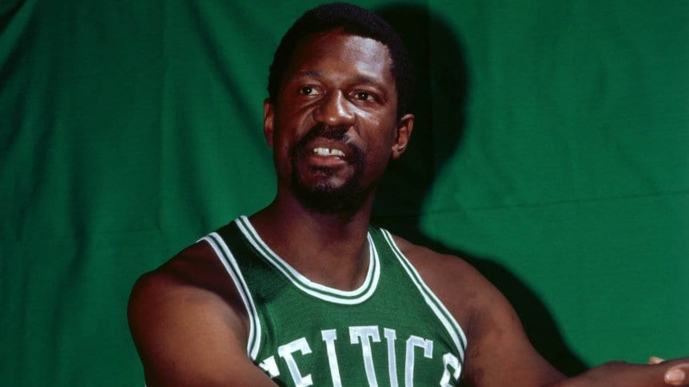
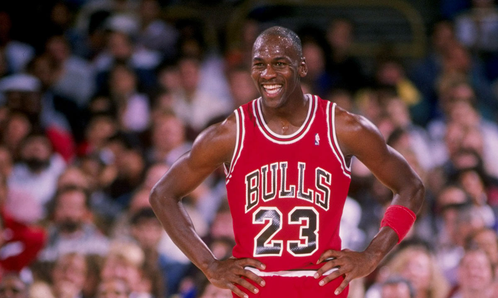
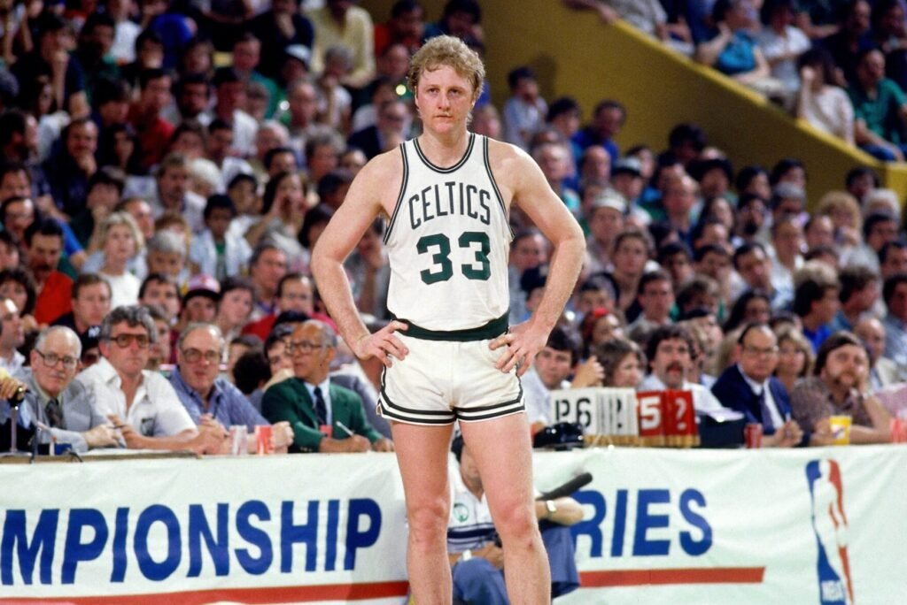

Bill Russell
5 veces MVP
AÑOS: 1957-58, 1960-61, 1961-62, 1962-63, 1964-65

Michael Jordan
5 veces MVP
AÑOS: 1987-88, 1990-91, 1991-92, 1995-96, 1997-98

LeBron James
4 veces MVP
AÑOS: 2008-09, 2009-10, 2011-12, 2012-13

Larry Bird
3 veces MVP
AÑOS: 1983-84, 1984-85, 1985-86